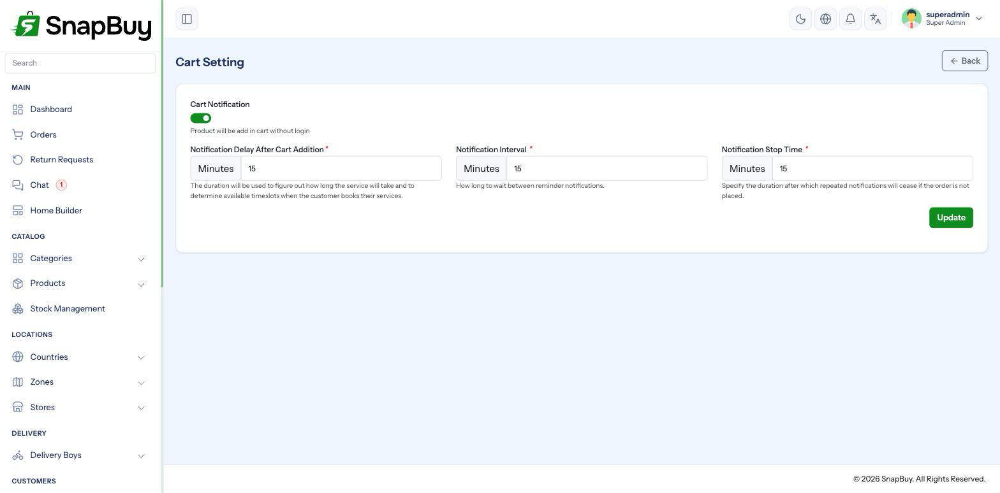

Cart Settings (Abandoned Cart Reminders)
Menu path: Settings → Cart Settings
Sends push reminders to customers who added items to their cart and never checked out.

Settings
| Field | Meaning |
|---|---|
| Cart Notification | Master switch |
| Notification Delay After Cart Addition | How long to wait after the last item is added before the first reminder |
| Notification Interval | Gap between repeat reminders |
| Notification Stop Time | When to stop reminding that customer |
All three timings are in minutes.
How the sequence runs
- A customer adds something to the cart and does not check out.
- After the delay, the first reminder is sent.
- Every interval after that, another reminder is sent.
- Once stop time is reached, reminders for that cart end.
- Checking out — or emptying the cart — stops them immediately.
Example — delay 60, interval 1440, stop 4320:
| Time after last cart change | What happens |
|---|---|
| 1 hour | First reminder |
| 1 day | Second reminder |
| 2 days | Third reminder |
| 3 days | Stops |
Cart reminders do not work without the cron job
Reminders are sent by cart:notification, run by the scheduler every minute. If the cron job is not set up, no reminder is ever sent — and the panel gives no indication anything is wrong.
Check Settings → Cron Jobs shows a green heartbeat before you spend time tuning the timings here.
Choosing timings
Aggressive reminders get your app muted
Push notifications are easy to turn off and hard to get back. A customer reminded every hour will disable notifications for your app permanently — costing you order updates and delivery alerts too, not just marketing.
Sane starting point: first reminder after 1 hour, repeat once a day, stop after 3 days.
Notification stop time is not optional
Leaving the stop time unset or very high means a customer who abandoned a cart months ago keeps getting reminders. Always set a limit.
What the reminder says
The wording comes from the notification templates:
| Template | When |
|---|---|
cart_reminder_first_customer | The first reminder |
cart_reminder_interval_customer | Every repeat |
Edit them under Notification Templates, including per-language versions.
Make the first reminder useful, not naggy
Mention the actual product, or note that stock is limited. "You left something behind" performs far worse than naming what it was.
Prerequisites
| Requirement | Why |
|---|---|
| Cron job running | Nothing sends without it |
| Firebase configured | Reminders are push notifications |
| Customer has the app and granted permission | No push token, no reminder |
| Templates written for each active language | Otherwise customers get the default language |
Troubleshooting
| Symptom | Cause | Fix |
|---|---|---|
| No reminders at all | Cron job missing | See Cron Job Setup |
| Cron fine, still nothing | Firebase not configured, or master switch off | Check Firebase; enable the switch |
| Reminders too frequent | Interval too short | Raise it — a day is usually right |
| Reminders never stop | Stop time unset or too high | Set a realistic limit |
| Sent after the customer ordered | Timings extremely short, race with checkout | Raise the initial delay |
| Wrong language | Template not translated | Add translations |